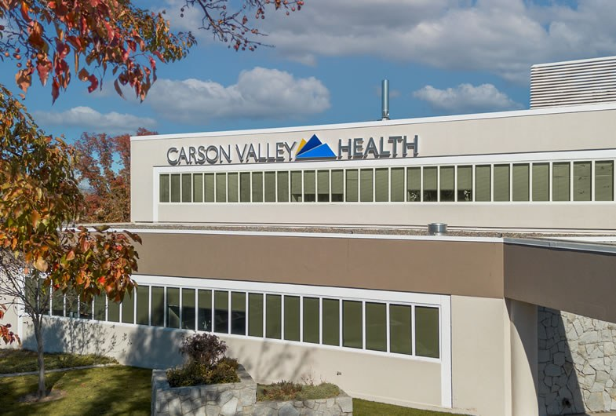

Finance
Financial strategy, capital planning and performance management for the whole organization.
Talk to us about financeGuidance from a health system that runs hospitals every day.
Advisory services, education and clinical collaboration for hospitals that are being built and hospitals already caring for patients.
Email our team about where your hospital is today and what you want to achieve.
We share a private catalog with our full range of advisory services, so we can tailor a solution to your unique needs.
We turn your choices into a proposal and a plan, and work closely with your teams from kickoff to execution.
Cleveland Clinic Connected brings hospitals and health organizations together around the globe with Cleveland Clinic's world-class expertise in the following areas:

Financial strategy, capital planning and performance management for the whole organization.
Talk to us about financeAssessments and training that raise the standard of care and the patient experience.
Talk to us about SQPETechnology and data guidance that makes clinical and operational work simpler and faster.
Talk to us about digitalContinuing education for clinicians and administrators of all levels, in person or online.
Talk to us about educationStanding up new clinical programs, and taking existing ones to the level your community needs.
Talk to us about service linesMost engagements combine several domains. We shape each one around where your hospital is today.
For new hospitals
Cleveland Clinic advisory across finance, safety and quality, digital and education, sequenced as one program from design to opening day.
For existing hospitals
For hospitals already caring for patients, we build the program around the goals you set. We start with an assessment against Cleveland Clinic standards, then focus where it matters most and grow with you through membership.
Talk to our teamFinance
How we help
From our work
SQPE
How we help
From our work
IT: Digital Tools & Analytics
How we help
From our work
Education
How we help
From our work
Service Lines & Centers of Excellence
How we help
From our work
Cleveland Clinic sarcoma specialists joined Vinmec clinicians at Vinmec Times City for a bone cancer case workshop, with about 100 attendees working through five complex sarcoma cases. It is part of Cleveland Clinic's support for the Vinmec Sarcoma Center: Cleveland Clinic experts have evaluated the program against international standards and observed a complex bone tumor surgery. Vinmec has been a Cleveland Clinic Connected member since 2023.


An in-person leadership program at Cleveland Clinic's main campus, open to physician leaders, executives and administrators from every Cleveland Clinic Connected member. Participants bring a leadership or operational challenge from their own organization, work through it in interactive sessions with Cleveland Clinic leaders and peers from other countries, and leave with an action plan.


Physician, nursing and clinical quality and safety leaders from Columbus Regional Health spent several days learning alongside their Cleveland Clinic Connected counterparts at Cleveland Clinic's main campus. In its first year of membership, the hospital completed nearly 30 projects with Cleveland Clinic Connected experts across 18 departments and service lines and received Cleveland Clinic physician feedback on five complex cases through the eClinical Review offering.

No. All care at member hospitals is provided by local care teams. Member physicians can consult Cleveland Clinic specialists on complex cases through eClinical Review.
No. Members keep full ownership and management of their facilities. Membership is a way to collaborate, share knowledge and take part in education programs.
Yes. Cleveland Clinic locations in the United States and abroad accept referrals from members, but a referral cannot be guaranteed: patient safety and patient preference decide where care takes place.
Like-minded healthcare organizations, in the United States and internationally, that want to grow, improve their practice and deliver a better experience for their patients.
Members include hospitals in Vietnam, Uzbekistan, Croatia and the United States.

Vinmec Times City International Hospital
Vietnam

Vinmec Central Park International Hospital
Vietnam

Vinmec Can Gio International General Hospital
Vietnam

Central Asian University Hospital
Uzbekistan

Radiochirurgia Zagreb
Croatia

Barton Health
California, United States

Carson Valley Health
Nevada, United States

Columbus Regional Health
Indiana, United States

Parrish Medical Center
Florida, United States